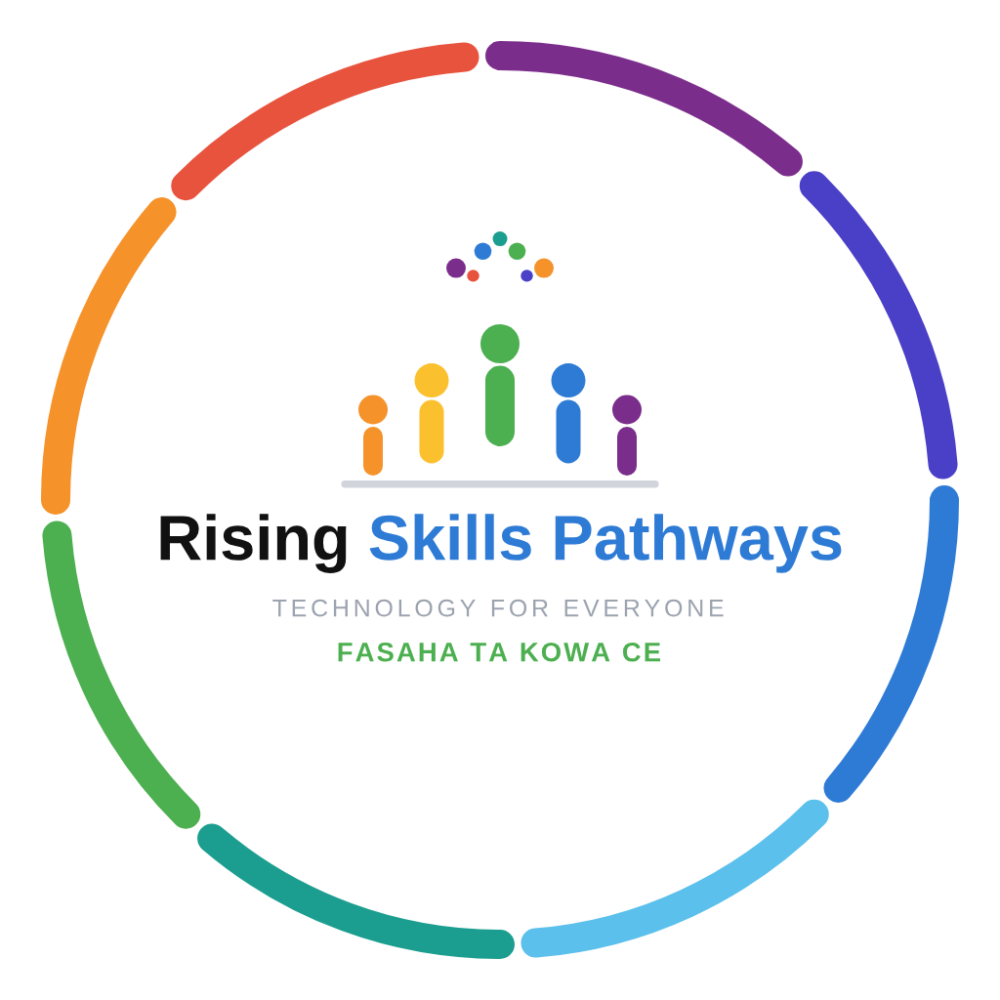

About Rising Skills Pathways Initiative
Our MissionTo empower girls, young people and underserved communities with accessible technology education, digital skills and mentorship — through inclusive training, multilingual educational resources and community-led learning.
A future where every girl and young person, regardless of background, location or language, has the knowledge, confidence and opportunity to participate in and shape the digital world.

For most girls here, the barrier was never ability. It was access — to tools, to language, to someone showing them tech was for them too. That's why we start in public schools. Many girls there have never had a computer at school or at home, or the head start some of their peers get. Rising Skills Pathways exists to close that gap, school by school.
Three working principles
These aren't slogans — they're the reasons specific choices get made, from which careers we lead with to which language a lesson opens in.
Relatable before aspirational
We open with careers a girl can picture herself doing next month — a Canva designer, a phone repair technician — because belief comes before ambition, not after it.
Values-compatible, not values-imposed
Working from home, staying close to family, earning without relocating — these already matter here. We build the pitch around them instead of asking anyone to trade them away.
Capability over promises
We don't lead with income numbers. Promises that don't land fast can do more harm than good — so we sell the skill, not the payday.
Why we teach in Hausa and English
Hausa & English, always
Every outreach session and most YouTube content runs bilingually. A girl shouldn't have to master English before she's allowed to believe tech is for her.